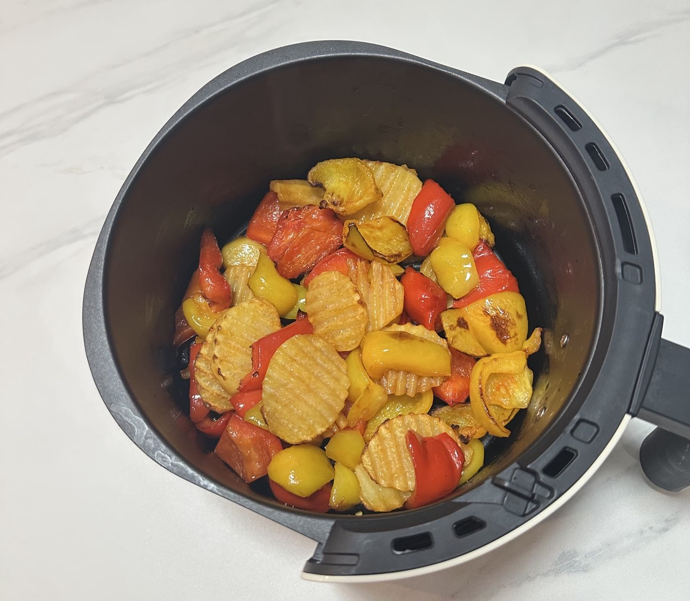

氣炸鍋烹飪 | 原創，AI翻譯
空氣炸鍋最近成了我最愛嘅煮食工具。我以大約126人民幣買咗部美的空氣炸鍋KZE5004。
我已經用佢整過下面呢啲餸，過程真係好享受。
最後展示嘅呢道餸唔係用空氣炸鍋整嘅——只係用煲煮嘅麵。既然係我近期煮過嘅嘢，我都擺埋上嚟。
如果你買咗件煮食用具後經常用佢，就可以話你真係好鍾意佢。
空氣炸鍋取代咗我嘅電焗爐。其實我想兩樣都用，但係太太唔准——佢埋怨話太阻掟，搞到飯廳同廚房好凌亂，本身已經擺滿咗唔少工具同餐具。
呢個都合理，因為太太週末會嚟探我，我都唔想個地方逼夾。如果我長住一個人，會將電焗爐搬返入飯廳。
同時保留兩樣廚具都有啲好處。第一，你可以同時用電焗爐同空氣炸鍋，特別係煮多道餸嘅時候。第二，你可以比較同樣食材用兩者煮出嚟嘅微妙分別。第三，由得件好產品擺喺度唔用好嘥。
成日用同一件工具都會悶，所以我試吓傳統明火煮食，用煲煮麵。記得2020同2021年，我成日喺父母屋企煮類似嘅餸，有時仲會拍啲短片。
嗰陣時，煮飯好似好輕鬆。但係而家，既然唔係成日煮，就算用空氣炸鍋有時都覺得麻煩，忙起上嚟就想叫外賣。結果，我近排好少用鑊或者煲——所以今次整到真係好開心。
我本來買咗幾包牛肉丸諗住用空氣炸鍋整，但而家都想試吓用煲煮。
碗麵好好味。我用咗好多水烚食材，舀走多餘嘅水，再落調味粉落個煲度。最後出嚟嘅成品好正！

來源：自行拍攝

來源：自行拍攝

來源：自行拍攝

來源：自行拍攝

來源：自行拍攝

來源：自行拍攝

來源：自行拍攝
煮食
2024.12.29
-
自己煮好簡單。用油爆鑊因為油嘅沸點高過水，可以更有效加熱食物。
-
用肉、菜、辣椒、蒜頭同薑煮餸好容易。
-
切菜器係好有用嘅工具。可以將蔬菜切粒、切片或者切條，可以用嚟處理例如切薯仔或者將辣椒切成細粒等任務。
-
用電飯煲煲湯好容易。加入食材，落鹽調味，校定時間等佢自己煮。
-
淮山湯好好，因為淮山容易煲淋兼且令湯變濃。紅蘿蔔、白蘿蔔同番茄都係煲湯好材料。
-
可以用焗爐整蛋撻、羊肉、牛肉、豬肉、熱狗、蘑菇等等。肉類就用200°C焗大約20分鐘。
-
戶外煮食需要有火。可以用乾樹葉起火。搵個器皿載住食物嚟煮，甚至用塊瓦片當臨時煲都得。
-
電飯煲除咗煮飯仲可以翻熱食物。不過要記住蔬菜會出水，搞到啲飯太濕。如果用電飯煲煮菜，落少少水就夠。
-
炒菜機械人係煮餸好幫手。只要加食材入去，等部機自己搞掂翻炒。
-
要了解每樣食材需要炒幾耐。西蘭花要耐啲，蘑菇同肉就快啲。
-
如果一齊炒，唔同烹飪時間會令部份食材過熟，部份未熟。落鑊次序好緊要。
-
應該盡量少洗鑊，可以一次過炒幾樣餸。
-
可以將同樣嘅程序或功能應用喺相似或同特性嘅物件上。煮食同編程都係咁。
-
用焗爐加熱嘅食材可以沾粟粉同生抽。用果汁醃都得，例如檸檬、橙或者蘋果汁。
-
將肉或其他食材切細件可以等佢哋更有效受熱。所以煲湯準備工作會唔同，因為可以接受大件啲材料。
-
煮食最重要係將食物徹底煮熟至安全食用。
-
用焗爐代替電蒸鍋意味住唔用水加熱食物，令食物變得乾身。
-
研缽同研杵係搗蒜頭嘅好工具。
-
唔好落太多鹽，特別係如果食材已經用生抽醃過。
-
肉通常唔使再洗。人傾向過度清洗食材；其實唔需要用水徹底清潔。只需要確保食材新鮮。
-
牛油紙比錫紙好，因為唔會黐底。
-
要小心含水量高嘅食材，例如燈籠椒。同肉一齊炒會出水，降低鑊溫拖慢煮食過程。
 來源：自行拍攝
來源：自行拍攝
來源：自行拍攝